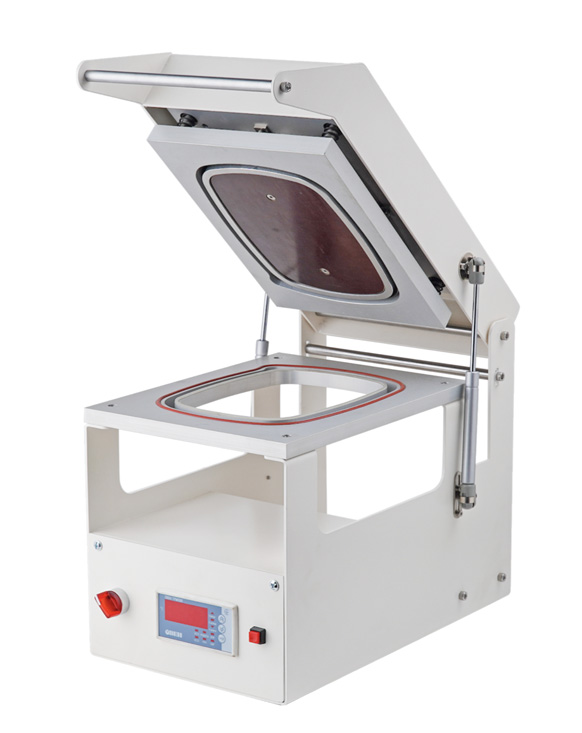

Особенности ручного запайщика лотков

Ручной запайщик используется для герметичного запаивания и надежного упаковывания различных продуктов питания.
Его главная особенность заключается в том, что он не предусматривает предварительную обработку инертными газами.
Ведь такое устройство считается конструктивно простым и имеет в своем наборе минимальное количество необходимых
функций.
Принцип эксплуатации ручного запайщика заключается в том, чтобы нагревательный элемент оказывал прямое
воздействие на пищевую пленку. Такая пленка, в свою очередь, подвергается активному процессу нагревания и под
влиянием повышенной температуры начинает постепенно плавиться. В результате пленка надежно припаивается по всему
контуру лотка, предотвращая возможное попадание воздуха внутрь контейнера с продукцией.
Современный запайщик лотков ручной может также быть дополнен регулятором температур, расположенным на панели
управления. Используя такой регулятор в ручном режиме, удается установить необходимую величину нагрева, что
фиксируется с учетом конкретной толщины пищевой пленки и материала, из которого был выполнен лоток.
Поэтому перед началом работы с новым запайщиком рекомендуется выполнить несколько тестовых запусков:
используется запайка с разными температурными режимами, после которой важно проверить качество каждого нового
шва. В результате можно разобраться и понять, как именно работает ручной запайщик лотков.
Некоторые современные модели производитель дополнительно укомплектовывает острыми ножами для оперативной
обрезки пленки в автоматическом режиме. В случае наличия матрицы съемного типа, а также ее дальнейшей замены
можно воспользоваться лотками разных форм и габаритов. В результате ручной запайщик лотков считается
действительно универсальным помощником.
Главное отличие таких моделей от других устройств заключается в небольших размерах и, как следствие, в
минимальном потреблении электроэнергии. Средние показатели производительности варьируются от 4 до 6 циклов за 1
минуту эксплуатации.
Трейсилер ручной нуждается в периодическом уходе: нагревательный элемент важно время от времени очищать, ведь
на его поверхности часто скапливаются остатки пригоревшей пищевой пленки. При этом важно быть предельно
аккуратными, чтобы не повредить поверхность нагревательной детали.